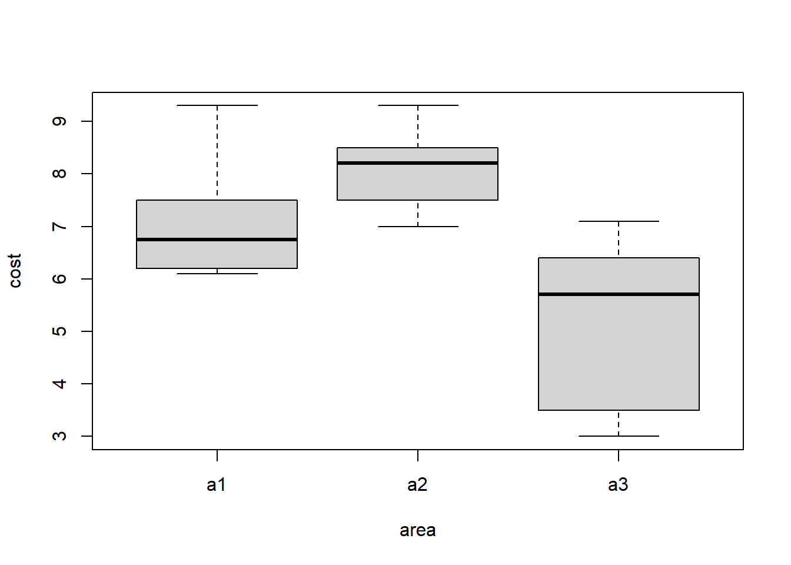

In order to obtain the confidence interval, first, a t-value of 90% confidence level must be obtained with the given statistics.
First, I will look for the confidence interval of the bypass group.
Code
# t of the given bypass groupbypass.t<-qt(p=0.95, df=539)bypass.t
[1] 1.647686
The confidence interval includes a section that falls margin of error from a specific predicted value, and this problem is to obtain the confidence interval of the mean, so the upper and lower limits of the confidence interval were obtained using the sample mean and the previously obtained t-value, respectively.
Code
# confidence interval of bypass groupbypass.conf.up<-19+bypass.t*(10/sqrt(539))bypass.conf.low<-19-bypass.t*(10/sqrt(539))bypass.conf.up
[1] 19.70971
Code
bypass.conf.low
[1] 18.29029
Now let’s look at the confidence interval of 90% of the angiography group in the same way.
Code
# confidence interval of angiography groupangio.t<-qt(p=0.95, df=847)angio.t
One Sample t-test
data: bypass.s
t = 44.184, df = 538, p-value < 2.2e-16
alternative hypothesis: true mean is not equal to 0
90 percent confidence interval:
18.44913 19.87842
sample estimates:
mean of x
19.16377
Code
t.test(angio.s, conf.level = .9)
One Sample t-test
data: angio.s
t = 54.954, df = 846, p-value < 2.2e-16
alternative hypothesis: true mean is not equal to 0
90 percent confidence interval:
17.15787 18.21788
sample estimates:
mean of x
17.68788
The statistics of the generated data did not exactly match the statistics given by the problem, so the exact same confidence interval was not obtained, but they are similar.
Question 2
A data vector of 1 for those who believe that college education is essential for success and 0 for those who do not.
Code
q2<-c(rep(1, 567), rep(0,464))
Then, we can simply obtain a 95% confidence interval using the t.test function.
Code
t.test(q2)
One Sample t-test
data: q2
t = 35.477, df = 1030, p-value < 2.2e-16
alternative hypothesis: true mean is not equal to 0
95 percent confidence interval:
0.5195334 0.5803696
sample estimates:
mean of x
0.5499515
As a result of this survey, the proportion of people who believe that college education is important for success is 55.0%, and the 95% confidence interval is from 52.0% to 58.0%.
When the significance level is 5%, the meaning of this confidence interval is that if the survey is conducted several times in the same way, there is a 95% probability that the confidence interval calculated from each survey result contains the parameter within that range.
Question 3
Depending on the value given in the problem, the population standard deviation is 42.5 (170/4), and the allowable margin of error is 5. And margin of error can be obtained by zsd/(n^1/2). So n can be obtained by solving the following equation. margin of error =< zsd(n^1/2) transform that equation, n >= (z*sd/margin of error)^2
The significance level here is 5%, so z is 1.96. And sd is 42.5 margin of error is 5. Then n >= (1.96*42.5/5)^2
Code
(1.96*42.5/5)^2
[1] 277.5556
n >= 277.56, In other words, the number of samples must exceed 278 to meet the conditions in question.
Question 4
A
First, assume that s in the population is equal to the sample in question. And the significance level is set at 5%.
Null Hypothesis: μ = 500 Alternative Hypothesis: μ ≠ 500
Since it is a test that estimates whether the parameter is a specific value, a two-side t-test should be performed. At this time, t is ȳ - μ / s/(n^1/2).
Code
t.a<-((410-500)/(90/3))t.a
[1] -3
t is -3. And since it is a two-side test, the p-value of this hypothesis can be obtained by multiplying the p-value at t=-3.
Code
p.a<-(pt(t.a, df=8))*2p.a
[1] 0.01707168
p-value is 0.017. And this is smaller than our significant level(0.05). So, we can reject our null hypothesis. This means that At the 95% confidence level, μ is not 500.
B
Here, the null hypothesis is μ >= 500. Then, the alternative hypothesis is μ < 500. In this case, a one-sided test shall be performed.
Code
t.b<--3p.b<-pt(t.b, df=8)p.b
[1] 0.008535841
The p-value can be obtained in the same way as A. Here, the value of p is 0.009. This means that at the 95% confidence level, μ is not greater than 500.
C
Here, contrary to B, the the null hypothesis is μ =< 500. Since the direction of the inequality has changed, the area of the p value in the t-distribution must be opposite to B.
Code
t.c<--3p.c<-(1-pt(t.c, df=8))p.c
[1] 0.9914642
Using these facts, the p-value is 0.9914. Now, at the 5% significance level, the null hypothesis cannot be rejected. That is, at a 95% confidence level, μ is less than 500.
Question 5
A
t is (ȳ-μ) / (sd/sqrt(n)). And sd/sqrt(n) is se. So we can compute t through this equation.
Code
# Jones's t and p-valuejones.t<-(519.5-500)/10jones.p<-(1-pt(jones.t, df=999))*2jones.t
[1] 1.95
Code
jones.p
[1] 0.05145555
Code
# Smith's t and p-valuesmith.t<-(519.7-500)/10smith.p<-(1-pt(smith.t, df=999))*2smith.t
[1] 1.97
Code
smith.p
[1] 0.04911426
B
α is a level arbitrarily set according to the researcher’s judgment, and does not affect the t or p-value of each hypothesis.
The p value means the probability that t will have such a value when t is a normal distribution, that is, even if ȳ=μ=500, and se is 10, the probability of ȳ=519.5 can be 5.14%. Therefore, p greater than α means that even if ȳ=μ is true, the probability of accidentally ȳ=519.5 is greater than the type 1 error set by the researcher (false positive), which means that the null hypothesis cannot be rejected.
So when α=0.05, Jones’s null hypothesis cannot be rejected, and Smith’s null hypothesis can be rejected. In other words, only Smith’s research results are statistically significant.
C
As seen in B, the p-value itself means the probability of a specific t, and not revealing a specific p-value does not tell how statistically significant this study will be at the significance level (type 1 error), so information loss occurs.
Question 6
First, I will enter the data frame given in the problem in r.
Test result chi-square value is 8.338. And p-value here(0.015) is less than given α(0.05). In other words, it can be concluded that the null hypothesis is rejected, and the selection ratio of snacks at the significance level of 0.05 varies depending on the grade.
Question 7
Here, the null hypothesis is that the average cost of the 3 area are the same. Therefore, the research hypothesis is that the average cost of at least one area is different.
Since the cost is a numeric variable, should ANOVA be selected to test that the average cost of 3 area are different.
First, I created a data frame using the given data.
Then let’s do ANOVA using the aov function and look at the resulting statistics.
Code
summary(aov(cost~area, df.7))
Df Sum Sq Mean Sq F value Pr(>F)
area 2 25.66 12.832 8.176 0.00397 **
Residuals 15 23.54 1.569
---
Signif. codes: 0 '***' 0.001 '**' 0.01 '*' 0.05 '.' 0.1 ' ' 1
F value is 8.176 and p-value is 0.00397. Therefore, if the significance level is 0.05, the null hypothesis is rejected. In other words, at a 95% confidence level, it can be concluded that the average cost of these three regions is not the same.
Finally, I will visually examine the average cost by region with a boxplot. From this, it can be seen that there is a clear difference.
Code
boxplot(cost~area, data=df.7)

Source Code
---title: "Homework 2"author: "Young Soo Choi"description: "hw2"date: "03/27/2023"format: html: toc: true code-fold: true code-copy: true code-tools: truecategories: - hw2---# Prepare```{r}library(tidyverse)library(dplyr)```# Question 1In order to obtain the confidence interval, first, a t-value of 90% confidence level must be obtained with the given statistics.First, I will look for the confidence interval of the bypass group.```{r}# t of the given bypass groupbypass.t<-qt(p=0.95, df=539)bypass.t```The confidence interval includes a section that falls margin of error from a specific predicted value, and this problem is to obtain the confidence interval of the mean, so the upper and lower limits of the confidence interval were obtained using the sample mean and the previously obtained t-value, respectively.```{r}# confidence interval of bypass groupbypass.conf.up<-19+bypass.t*(10/sqrt(539))bypass.conf.low<-19-bypass.t*(10/sqrt(539))bypass.conf.upbypass.conf.low```Now let's look at the confidence interval of 90% of the angiography group in the same way.```{r}# confidence interval of angiography groupangio.t<-qt(p=0.95, df=847)angio.tangio.conf.up<-18+angio.t*(9/sqrt(847))angio.conf.low<-18-angio.t*(9/sqrt(847))angio.conf.upangio.conf.low```For a 90% confidence interval, a bypass group is from 18.29 to 19.71, an angiography group is from 17.49 to 18.51.## MoreRandom data were generated using the given statistics and each confidence interval was also obtained.```{r}set.seed(1)bypass.s<-rnorm(539, mean=19, sd=10)angio.s<-rnorm(847, mean=18, sd=9)t.test(bypass.s, conf.level = .9)t.test(angio.s, conf.level = .9)```The statistics of the generated data did not exactly match the statistics given by the problem, so the exact same confidence interval was not obtained, but they are similar.# Question 2A data vector of 1 for those who believe that college education is essential for success and 0 for those who do not.```{r}q2<-c(rep(1, 567), rep(0,464))```Then, we can simply obtain a 95% confidence interval using the t.test function.```{r}t.test(q2)```As a result of this survey, the proportion of people who believe that college education is important for success is 55.0%, and the 95% confidence interval is from 52.0% to 58.0%.When the significance level is 5%, the meaning of this confidence interval is that if the survey is conducted several times in the same way, there is a 95% probability that the confidence interval calculated from each survey result contains the parameter within that range.# Question 3Depending on the value given in the problem, the population standard deviation is 42.5 (170/4), and the allowable margin of error is 5. And margin of error can be obtained by z*sd/(n^1/2).So n can be obtained by solving the following equation. margin of error =< z*sd(n^1/2)transform that equation, n >= (z*sd/margin of error)^2The significance level here is 5%, so z is 1.96. And sd is 42.5 margin of error is 5. Then n >= (1.96*42.5/5)^2```{r}(1.96*42.5/5)^2```n >= 277.56, In other words, the number of samples must exceed 278 to meet the conditions in question.# Question 4## AFirst, assume that s in the population is equal to the sample in question. And the significance level is set at 5%.Null Hypothesis: μ = 500Alternative Hypothesis: μ ≠ 500Since it is a test that estimates whether the parameter is a specific value, a two-side t-test should be performed. At this time, t is ȳ - μ / s/(n^1/2).```{r}t.a<-((410-500)/(90/3))t.a```t is -3. And since it is a two-side test, the p-value of this hypothesis can be obtained by multiplying the p-value at t=-3.```{r}p.a<-(pt(t.a, df=8))*2p.a```p-value is 0.017. And this is smaller than our significant level(0.05). So, we can reject our null hypothesis. This means that At the 95% confidence level, μ is not 500.## BHere, the null hypothesis is μ >= 500. Then, the alternative hypothesis is μ < 500. In this case, a one-sided test shall be performed.```{r}t.b<--3p.b<-pt(t.b, df=8)p.b```The p-value can be obtained in the same way as A. Here, the value of p is 0.009. This means that at the 95% confidence level, μ is not greater than 500.## CHere, contrary to B, the the null hypothesis is μ =< 500. Since the direction of the inequality has changed, the area of the p value in the t-distribution must be opposite to B.```{r}t.c<--3p.c<-(1-pt(t.c, df=8))p.c```Using these facts, the p-value is 0.9914. Now, at the 5% significance level, the null hypothesis cannot be rejected. That is, at a 95% confidence level, μ is less than 500.# Question 5## At is (ȳ-μ) / (sd/sqrt(n)). And sd/sqrt(n) is se. So we can compute t through this equation.```{r}# Jones's t and p-valuejones.t<-(519.5-500)/10jones.p<-(1-pt(jones.t, df=999))*2jones.tjones.p``````{r}# Smith's t and p-valuesmith.t<-(519.7-500)/10smith.p<-(1-pt(smith.t, df=999))*2smith.tsmith.p```## Bα is a level arbitrarily set according to the researcher's judgment, and does not affect the t or p-value of each hypothesis.The p value means the probability that t will have such a value when t is a normal distribution, that is, even if ȳ=μ=500, and se is 10, the probability of ȳ=519.5 can be 5.14%. Therefore, p greater than α means that even if ȳ=μ is true, the probability of accidentally ȳ=519.5 is greater than the type 1 error set by the researcher (false positive), which means that the null hypothesis cannot be rejected.So when α=0.05, Jones's null hypothesis cannot be rejected, and Smith's null hypothesis can be rejected. In other words, only Smith's research results are statistically significant.## CAs seen in B, the p-value itself means the probability of a specific t, and not revealing a specific p-value does not tell how statistically significant this study will be at the significance level (type 1 error), so information loss occurs.# Question 6First, I will enter the data frame given in the problem in r.```{r}df1 <-data.frame(grade =rep("6th", 100),snack =c(rep("healthy", 31), rep("unhealthy", 69)))df2 <-data.frame(grade =rep("7th", 100),snack =c(rep("healthy", 43), rep("unhealthy", 57)))df3 <-data.frame(grade =rep("8th", 100),snack =c(rep("healthy", 51), rep("unhealthy", 49)))df<-rbind(df1, df2, df3)table(df)```Null Hypothesis: Snack selection ratio is the same for each grade.(Healthy Snack Choice Ratio of 6th grade, 7th grade, and 8th grade is equal.)Test: Here, the categorical data of healthy and unhealthy snacks are given, so Chi-square is used.```{r}chisq.test(table(df))```Test result chi-square value is 8.338. And p-value here(0.015) is less than given α(0.05). In other words, it can be concluded that the null hypothesis is rejected, and the selection ratio of snacks at the significance level of 0.05 varies depending on the grade.# Question 7Here, the null hypothesis is that the average cost of the 3 area are the same. Therefore, the research hypothesis is that the average cost of at least one area is different.Since the cost is a numeric variable, should ANOVA be selected to test that the average cost of 3 area are different.First, I created a data frame using the given data.```{r}df.7<-data.frame(cost=c(6.2, 9.3, 6.8, 6.1, 6.7, 7.5, 7.5, 8.2, 8.5, 8.2, 7.0, 9.3, 5.8, 6.4, 5.6, 7.1, 3.0, 3.5),area=c(rep("a1", 6), rep("a2", 6), rep("a3", 6)))```Then let's do ANOVA using the aov function and look at the resulting statistics.```{r}summary(aov(cost~area, df.7))```F value is 8.176 and p-value is 0.00397. Therefore, if the significance level is 0.05, the null hypothesis is rejected. In other words, at a 95% confidence level, it can be concluded that the average cost of these three regions is not the same.Finally, I will visually examine the average cost by region with a boxplot. From this, it can be seen that there is a clear difference.```{r}boxplot(cost~area, data=df.7)```